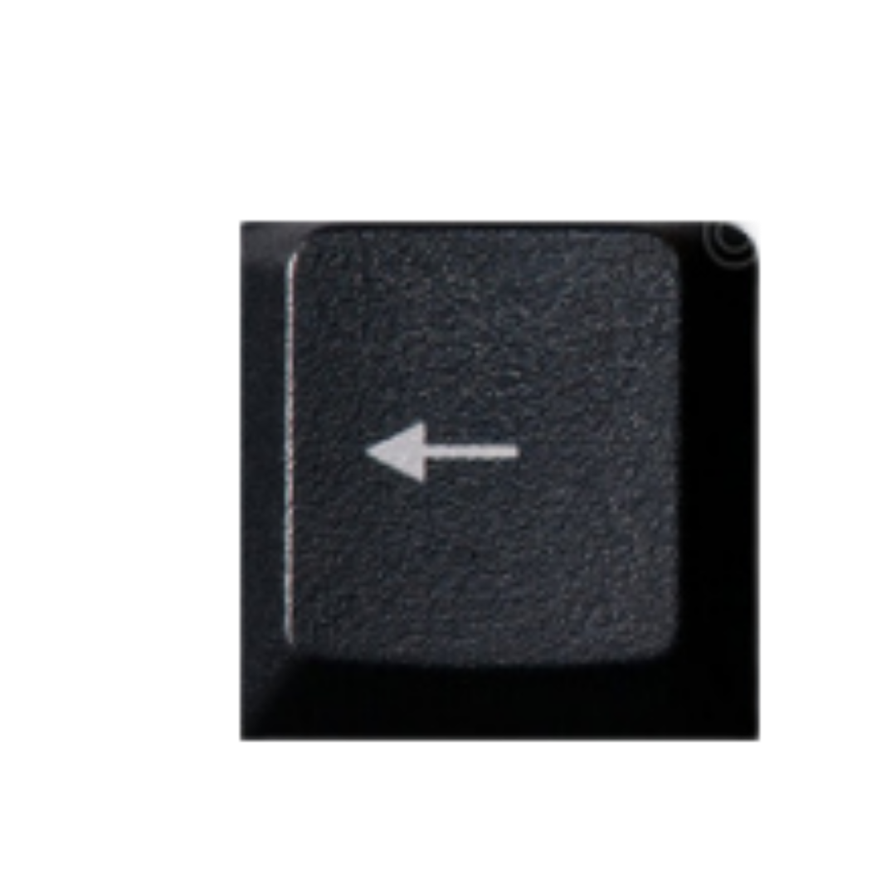

Shun é um dos cavaleiros de bronze de Atenas e também irmão de Ikki de Fênix. É o cavaleiro mais doce e não gosta de lutar por mais que ache necessário.
Lugar de treinamento: Ilha de Andrômeda, Etiópia

Corrente de Andrômeda: As correntes são objetivas, querem destruir ou atacar o oponente.
Defesa

Soco
Chute
Técnica Especial

Andar
 →
→